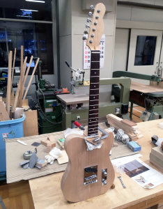

ギター本制作
材料があらかた揃ったので，いよいよギターの本制作に入っていきます．まずはボディ材の荒加工から行っていきたいと思います．
まず初めに，どのようなギターを作るかを決めることにしました．
ボディ材粗加工， 各ポケットのザグリ加工
今回制作するのは，エスクワイヤータイプのエレキギターですが，形状としてはテレキャスタータイプと同じであり，フロントピックアップがあるかないかという違いだけなのでひとまずテレキャスターを作るイメージで制作を進めていきたいと思います．
そのため，今回テンプレートとしてテレキャスタータイプのものを使っていきます．テンプレートは electricherald というフリーでギターのテンプレートをダウンロードできるサイトから拝借したものを，原寸サイズに直して印刷し，ベニヤ板に貼り付けました．
①印刷したテンプレートをベニヤ板に貼り付け，ボディ材にさらに貼り合わせて切断していきます．のこぎりやヤスリを使い分けながらテンプレートの形になるように仕上げていきます．湾曲した部分の加工は手にヤスリをつけてかけることで，綺麗な曲線にすることができました．
③大まかな形になってきたら，ベルトサンダーと紙やすりで最終的なボディの形に整形していきます．ネックポケットの深さは18mmに設定しました．（ネックポケットが深いと，弦の高さが上がってしまう．浅いとその逆で指板と弦が開放弦でも常に触れてしまう状態になる．）
②ピックアップとネックを取り付けるためのザグリ加工です．一度ドリルでトリマーの葉が入るくらいの穴を開け，そこにトリマーをセットして切削していきます．初めてトリマーを使う方は，一度ボディ材等の加工などで出た端材で練習した方が，後々後悔しないで済むと思われます．
トリマーに不慣れであったため，ネックポケットの加工の際に，トリマーの刃がボディの角に当たり欠損させてしまいました．ネックポケットはそのギターの『運命』を決める重要な部分です．トリマーをしっかり練習して，ゆっくり正確に加工しましょう．
パーツ位置決め，仮取り付け
塗装の前に音の鳴りが気になる，という理由を作り（本当はただ早く弾きたいだけ）パーツの位置決めをすることにしました．
ブリッジやネックを取り付けるには，スケール（弦巻き器からブリッジまでの長さ）の寸法を知る必要がありました．ここを妥協してしまうと，オクターブ（簡単に言うと音の精度を良くするための調整）が合わなくなるとのことでした．今回は，Fender社のテレキャスターのスケール"634mm"を目安に部品を取り付けました．
ネックプレート制作
パーツの位置を入念に何度も計測し，部品を取り付けていた時，私はネックをボディに固定するために必要なネックプレートを購入していないことに気づきました．購入しようか迷いましたが，早く引きたい衝動にかられ，あり物でネックプレートを制作してしまうことにしました．
学校の備品の中で使えそうなものを探し，おそらく使われていなかったであろう， 金属プレートを見繕いました．左の画像は，金切りのこで大まかな加工をしています．
いきなりプレートに穴が4つも空いてしまっています．ここには掲載していませんが，４辺を切断する前にネジが入る穴を加工した方が良いと考え，先に加工をしました．
プレートの４辺を荒加工の際同様，金切りのこで切り落とした後，鉄工やすりでバリ取り，仕上げにピカール（液体研磨剤）を使って磨きました．
最後の研磨の際に強く擦りすぎてしまい，縦の傷が目立ってしまいましたが，なんとかただの金属板をネックプレートとして使えるように加工できました．
仮組み，試奏
ネックプレートも完成し，ネックをつけられる状態になり仮組み，実際に弦を貼ることができる状態までになりました．
画像にはありませんが，実際に試奏もしてみました．配線をしていないので生音ではありましたが，思っていた以上に生音の鳴りが良く，自分が作ったものから音が出たことに感動しました．
↓次回からは．拭き漆による塗装に入ります．↓